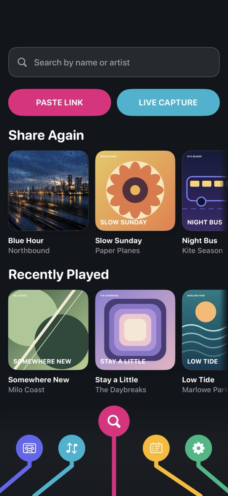
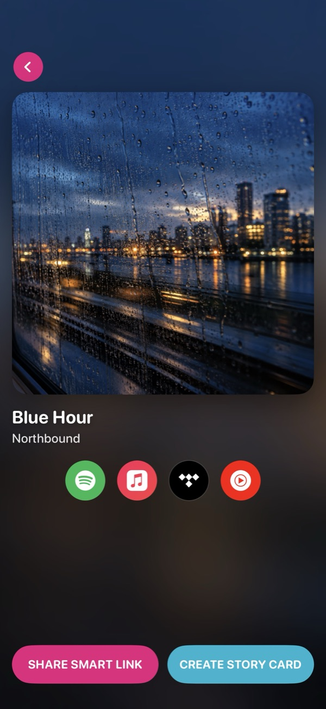
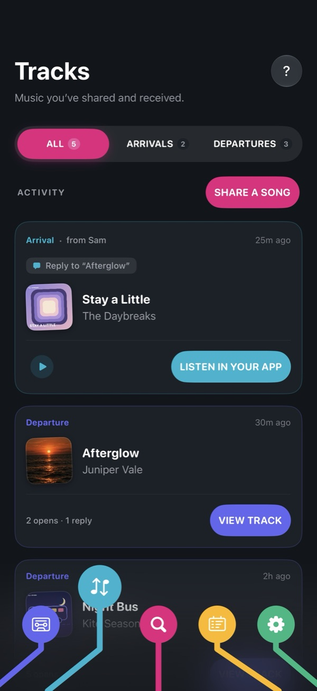
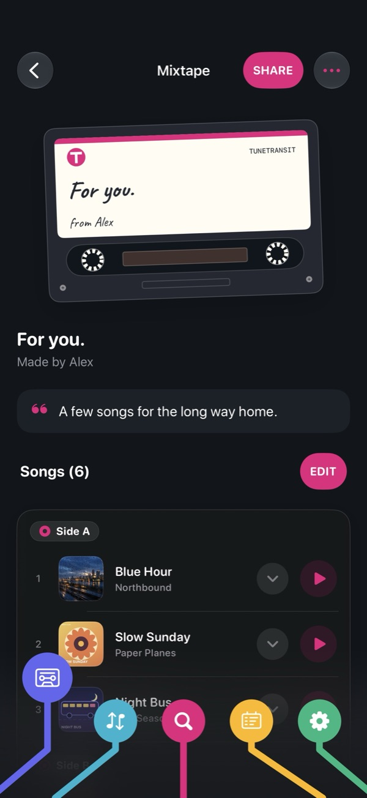
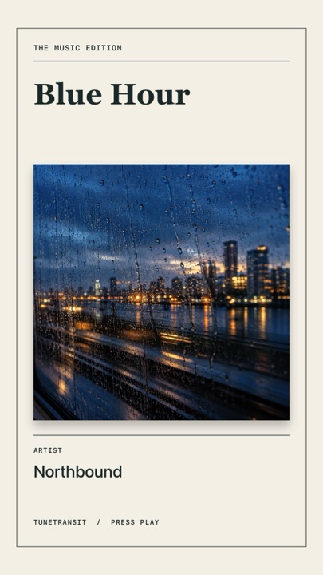
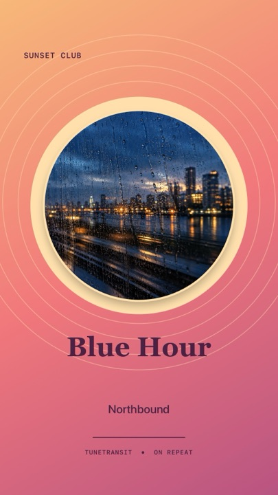
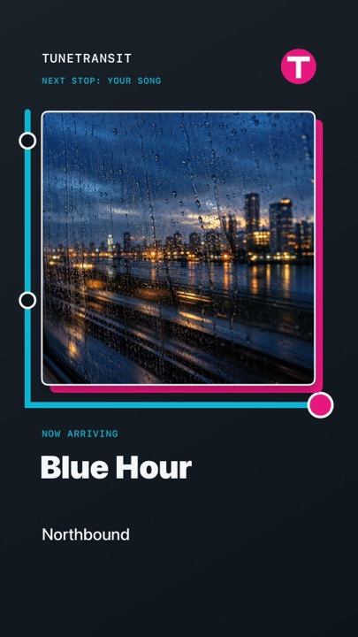
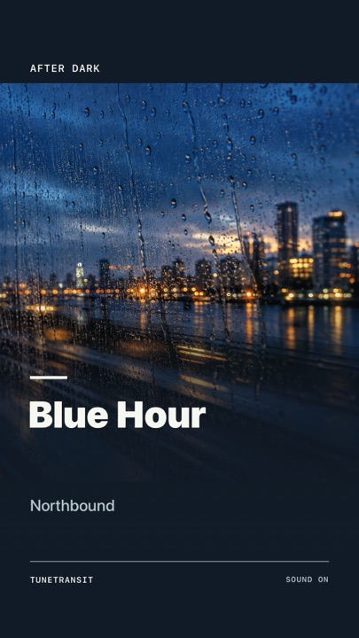
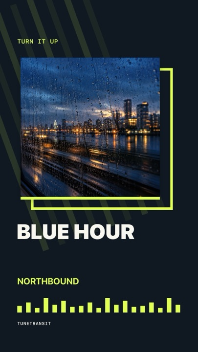
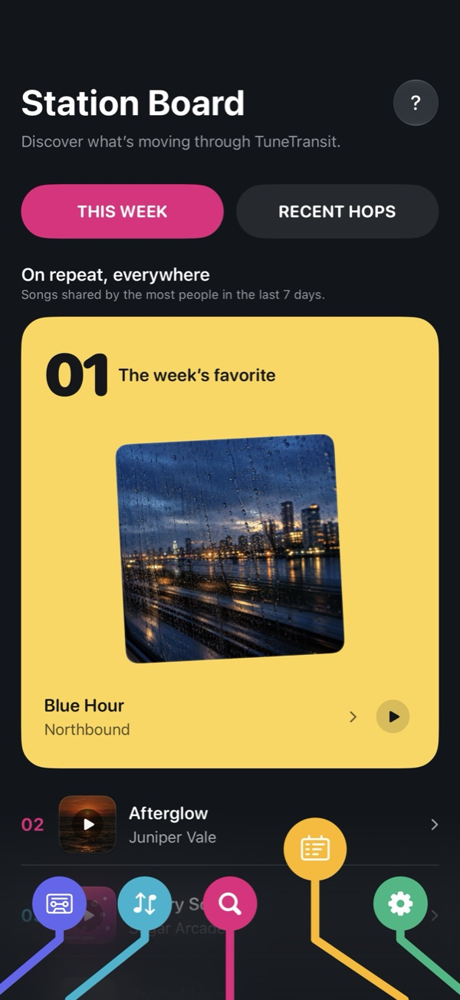

MUSIC SHARING FOR EVERY APP
Your song.
Their music app.
You’re on Apple Music. They’re on Spotify. Send one TuneTransit link and the song opens in whichever app they use, with nothing for them to download.
Free on iPhone, iPad, Mac, and Apple Vision Pro
Whatever you use.
Whatever they use.
Any of the four apps to any of the four apps. The song you picked is the song they hear, down to the exact recording.
- 9:41BLUE HOUR NORTHBOUNDfrom APPLE MUSICto SPOTIFYOPENED
- 9:58AFTERGLOW JUNIPER VALEfrom SPOTIFYto APPLE MUSICOPENED
- 10:12STAY A LITTLE THE DAYBREAKSfrom YOUTUBE MUSICto TIDALOPENED
- 10:30NIGHT BUS KITE SEASONfrom TIDALto YOUTUBE MUSICBOARDING
Every group chat has someone on a different app.
A regular link only plays for people who use the same service you do. A TuneTransit link plays for everyone.
open.spotify.com/track/4dV…
this one is so you
I don’t have Spotify 😭
what’s it called?
✕ LOST IN TRANSIT
this one is so you
opened it in Apple Music. it’s on repeat
✓ ARRIVED IN APPLE MUSIC
Nothing to install
Links open in any browser, on iPhone, Android, or a computer. No account either.
The exact recording
Not a remix, a live take, or a “feat.” version that happened to match.
Know it landed
Your Departures show when each link gets opened, so you’re not left wondering.
Find songs any way
Type a name, paste a link from another app, or capture what’s playing.
How a song travels
Three stops, start to finish. Only you need the app.
-
Find it
Search by name or artist, paste a link from any music app, or use Live Capture on whatever’s playing.

-
Send one link
Share a Smart Link in a text, a DM, or anywhere else. It’s saved in your Departures so you can see when it’s opened.

-
They play it their way
The link opens in their browser. They tap their music app and the song is there. No account, no download.
share.tunetransit.appSam sent you a song Blue Hour NorthboundOPEN IN
TRACKS
Every song you sent. Every one that came back.
Departures are the songs you’ve shared, with how often each link was opened. Arrivals are songs friends sent you, ready to play in your app. Reply with a song and the thread stays together.


MIXTAPES
Make someone a mixtape.
Pick the songs, say why each one made the cut, and choose how the tape looks. They get a page that plays every preview and opens each song in their app.
Free: up to 5 songs · Premium: up to 500, plus every tape look
STORY CARDS
Post the song, not a screenshot.
Turn any song into a Story Card for Instagram Stories and anywhere else you post. Pick from five designs: Subway, Sunset Club, After Dark, Paper, and Pulse.
Included with Premium






STATION BOARD
See what’s moving.
The songs shared by the most people on TuneTransit this week, and the latest hops between listeners. A good place to find your next one.
Before you board
Does my friend need TuneTransit?
No. Your link opens in their browser, on iPhone, Android, or a computer. They tap the music app they use and the song is there. No download, no account.
Which music apps does it work with?
Apple Music, Spotify, TIDAL, and YouTube Music, in any direction. Catalogs differ a little between services, so a song can occasionally be missing from one of them.
Will they hear the same version I sent?
Yes. TuneTransit keeps the exact recording you shared instead of switching to a remix, a live take, or a “feat.” version on the other service.
What does it cost?
TuneTransit is free to download, with 3 song or album searches a day and mixtapes of up to 5 songs. Premium adds unlimited searches, bigger mixtapes, Story Cards, and more for $1.99 a month or $9.99 once.
Where can I use it?
On iPhone, iPad, Mac, and Apple Vision Pro. You can also ask Siri to find a song, and Premium adds TuneMessage for sending songs right inside Messages.
Who makes TuneTransit?
One developer. Questions, ideas, and bug reports go straight to the person who built it at mail@tunetransit.app.